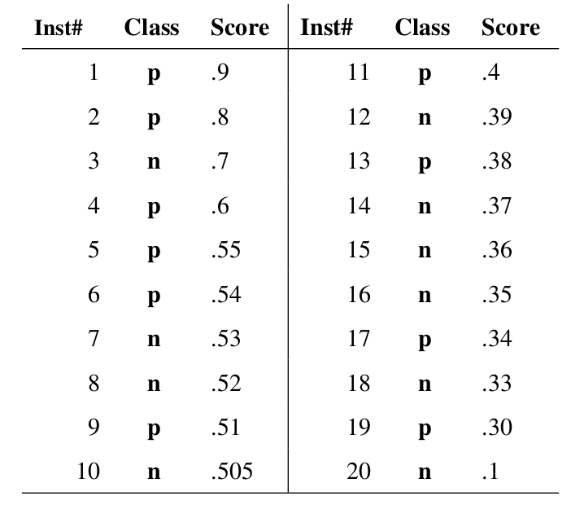
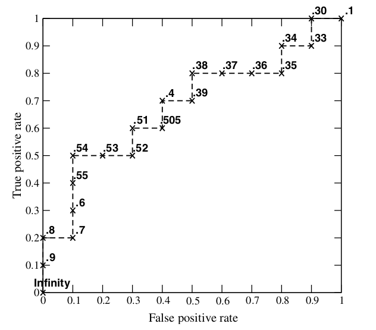

ROC（Receiver Operating Characteristic）曲线和AUC常被用来评价一个二值分类器（binary classifier）的优劣，对两者的简单介绍见这里。这篇博文简单介绍ROC和AUC的特点，以及更为深入地，讨论如何作出ROC曲线图以及计算AUC。
ROC曲线
需要提前说明的是，我们这里只讨论二值分类器。对于分类器，或者说分类算法，评价指标主要有precision，recall，F-score，以及我们今天要讨论的ROC和AUC。下图是一个ROC曲线的示例。

正如我们在这个ROC曲线的示例图中看到的那样，ROC曲线的横坐标为false positive rate（FPR），纵坐标为true positive rate（TPR）。下图中详细说明了FPR和TPR是如何定义的。

ROC曲线图中的四个点和一条线：
- (0,1)，即FPR=0, TPR=1，这意味着FN（false negative）=0，并且FP（false positive）=0。Wow，这是一个完美的分类器，它将所有的样本都正确分类。
- (1,0)，即FPR=1，TPR=0，类似地分析可以发现这是一个最糟糕的分类器，因为它成功避开了所有的正确答案。
- (0,0)，即FPR=TPR=0，即FP（false positive）=TP（true positive）=0，可以发现该分类器预测所有的样本都为负样本（negative）。
- (1,1），分类器实际上预测所有的样本都为正样本。
经过以上的分析，我们可以断言，ROC曲线越接近左上角，该分类器的性能越好。
- ROC曲线中虚线y=x上的点,这条对角线上的点其实表示的是一个采用随机猜测策略的分类器的结果，例如(0.5,0.5)，表示该分类器随机对于一半的样本猜测其为正样本，另外一半的样本为负样本。
如何画ROC曲线
对于一个特定的分类器和测试数据集，显然只能得到一个分类结果，即一组FPR和TPR结果，而要得到一个曲线，我们实际上需要一系列FPR和TPR的值，这又是如何得到的呢？我们先来看一下Wikipedia上对ROC曲线的定义：
In signal detection theory, a receiver operating characteristic (ROC), or simply ROC curve, is a graphical plot which illustrates the performance of a binary classifier system as its discrimination threshold is varied.
问题在于“as its discrimination threashold is varied”。如何理解这里的“discrimination threashold”呢？我们忽略了分类器的一个重要功能“概率输出”，即表示分类器认为某个样本具有多大的概率属于正样本（或负样本）。通过更深入地了解各个分类器的内部机理，我们总能想办法得到一种概率输出。通常来说，是将一个实数范围通过某个变换映射到(0,1)区间。
假如我们已经得到了所有样本的概率输出（属于正样本的概率），现在的问题是如何改变“discrimination threashold”？我们根据每个测试样本属于正样本的概率值从大到小排序。下图是一个示例，图中共有20个测试样本，“Class”一栏表示每个测试样本真正的标签（p表示正样本，n表示负样本），“Score”表示每个测试样本属于正样本的概率。

接下来，我们从高到低，依次将“Score”值作为阈值threshold，当测试样本属于正样本的概率大于或等于这个threshold时，我们认为它为正样本，否则为负样本。举例来说，对于图中的第4个样本，其“Score”值为0.6，那么样本1，2，3，4都被认为是正样本，因为它们的“Score”值都大于等于0.6，而其他样本则都认为是负样本。每次选取一个不同的threshold，我们就可以得到一组FPR和TPR，即ROC曲线上的一点。这样一来，我们一共得到了20组FPR和TPR的值，将它们画在ROC曲线的结果如下图：

当我们将threshold设置为1和0时，分别可以得到ROC曲线上的(0,0)和(1,1)两个点。将这些(FPR,TPR)对连接起来，就得到了ROC曲线。当threshold取值越多，ROC曲线越平滑。
其实，我们并不一定要得到每个测试样本是正样本的概率值，只要得到这个分类器对该测试样本的“评分值”即可（评分值并不一定在(0,1)区间）。评分越高，表示分类器越肯定地认为这个测试样本是正样本，而且同时使用各个评分值作为threshold。我认为将评分值转化为概率更易于理解一些。
AUC值的计算
AUC（Area Under Curve）被定义为ROC曲线下的面积，显然这个面积的数值不会大于1。又由于ROC曲线一般都处于y=x这条直线的上方，所以AUC的取值范围在0.5和1之间。使用AUC值作为评价标准是因为很多时候ROC曲线并不能清晰的说明哪个分类器的效果更好，而作为一个数值，对应AUC更大的分类器效果更好。
在了解了ROC曲线的构造过程后，编写代码实现并不是一件困难的事情。相比自己编写代码，有时候阅读其他人的代码收获更多，当然过程也更痛苦些。在此推荐scikit-learn中关于计算AUC的代码。
AUC意味着什么
那么AUC值的含义是什么呢？根据(Fawcett, 2006)，AUC的值的含义是： > The AUC value is equivalent to the probability that a randomly chosen positive example is ranked higher than a randomly chosen negative example.
这句话有些绕，我尝试解释一下：首先AUC值是一个概率值，当你随机挑选一个正样本以及一个负样本，当前的分类算法根据计算得到的Score值将这个正样本排在负样本前面的概率就是AUC值。当然，AUC值越大，当前的分类算法越有可能将正样本排在负样本前面，即能够更好的分类。
为什么使用ROC曲线
既然已经这么多评价标准，为什么还要使用ROC和AUC呢？因为ROC曲线有个很好的特性： 当测试集中的正负样本的分布变化的时候，ROC曲线能够保持不变。在实际的数据集中经常会出现类不平衡（class imbalance）现象，即负样本比正样本多很多（或者相反），而且测试数据中的正负样本的分布也可能随着时间变化。下图是ROC曲线和Precision-Recall曲线的对比：

在上图中，(a)和(c)为ROC曲线，(b)和(d)为Precision-Recall曲线。(a)和(b)展示的是分类器在原始测试集（正负样本分布平衡）的结果，(c)和(d)是将测试集中负样本的数量增加到原来的10倍后，分类器的结果。可以明显的看出，ROC曲线基本保持原貌，而Precision-Recall曲线则变化较大。